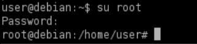

Config Files
• Many services and programs use configuration (config) files to store settings.
• If a service needs to authenticate to something, it might store the credentials in a config file.
• If these config files are accessible, and the passwords they store are reused by privileged users, we may be able to use it to log in as that user.
0. Search for history files
target@debian:~$ find / -name *.ovpn -o -name *.config -ls 2>/dev/null
1. View the contents of the myvpn.ovpn config file:
target@debian:~$ cat /home/user/myvpn.ovpn
The
auth-user-pass option in OpenVPN allows for the plaintext storage of credentials in a file ( /etc/openvpn/auth.txt )
2. View the contents of the /etc/openvpn/auth.txt file:
target@debian:~$ cat /etc/openvpn/auth.txt
5. Use the su command to switch to the root user account, using the password found in the auth.txt file:
